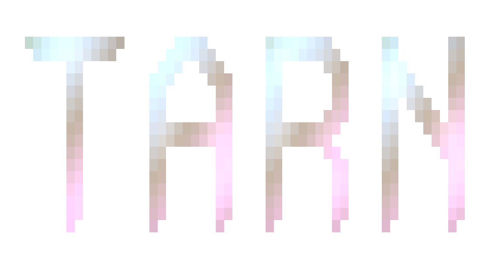
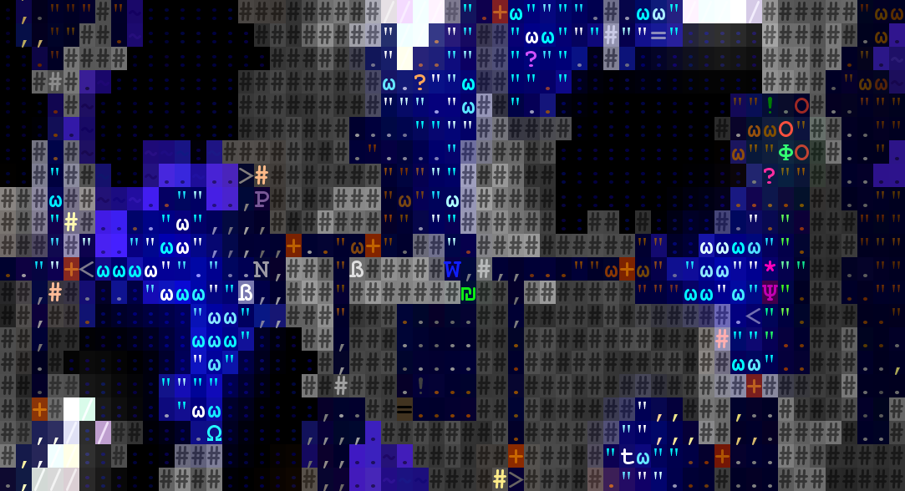
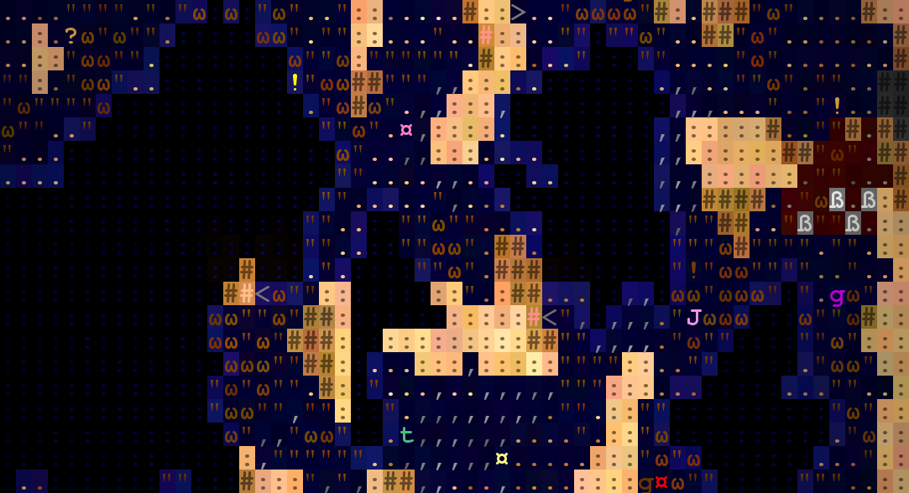
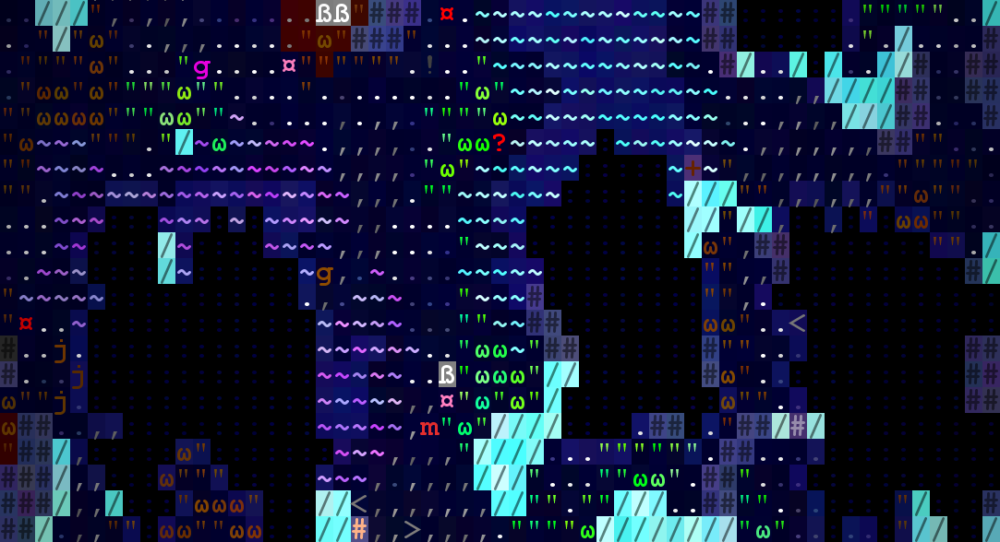
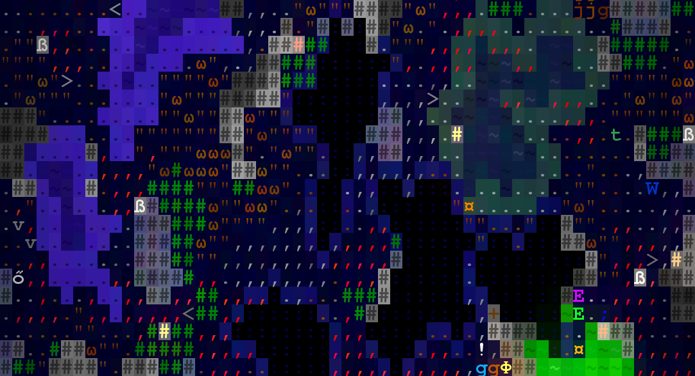
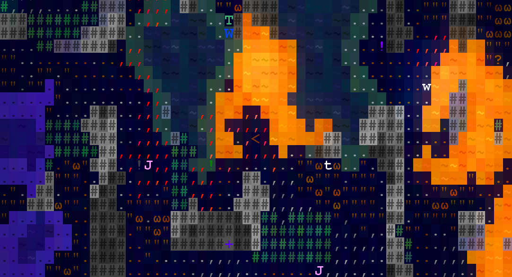
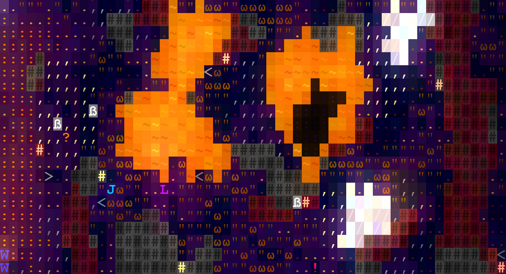
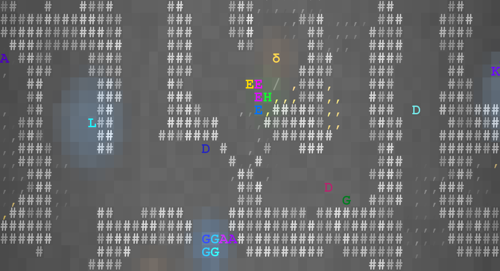

TARN is a traditional roguelike game being actively developed as a passion project. Retrieve the mythical Amulet of Yendor from the bowels of the Fog of War and return with it alive to the surface!
Move around the dungeon with the mouse, the vi-keys, or keypad. You can also examine features in the dungeon by hovering over them with the mouse or by pressing 'Enter' and moving the cursor. Other commands are listed in the help menu, accessed by pressing '?'.
Your goal is to reach depth 26, obtain the Amulet of Yendor, and ascend the upstairs on depth 1 -- all without dying in the process.







Crusaders have a lot of ways to deal with various classes of monsters, notably demons and the undead. They possess no affinities that affect their wands or charms and instead imbue their physical weapons with magical abilities.
Occultists combine stealth with magic. Focusing on sneak attacks with daggers and magic attacks with wands, being able to effectively swap between the two styles is a necessity for this class.
Tinkerers are able to salvage and craft weapons and armor, for example turning less powerful melee weapons into much more useful disposable throwing weapons. They also start with a pickaxe, enabling them to dig through levels.
Jesters provide the most adaptability in terms of weapons. Many of their affinities allow you to transition between melee, ranged, and magic attacks fluidly with damage or defense bonuses.
Dragoons specialize in dealing with enemies quickly and without remorse. In addition to their affinities with both melee and ranged weapons, they can persist in combat through killstreaks and are stoic against spellcasters.
Artificers excel in all forms of magic, even being able to salvage and craft magic items including relics and charms, but they lack any weapon affinities, making them very reliant on wands and allies for damage.
For players familiar with Brogue, the Deprived offers the most similar experience -- they start with the same items and do not have access to any affinities.
Scrolls of upgrade are one of the most important items you will find in the dungeon. Reading it allows you to permanently make a single item more powerful -- weapons will increase in both damage and accuracy, armor will increase in defense and evasion, rings will increase in effect, wands and charms will recharge faster and increase in effect, and relics will be granted additional charges.
There are also potions of healing, which fully recover you to full health and cure you of most harmful debuffs -- essential in dire situations.
Each self-contained level of the dungeon contains either one scroll of upgrade or one potion of healing.
Food items are also found scattered throughout the dungeon. You have a limited amount of nutrition before you begin to starve, so it's necessary that you keep exploring new levels to find more food.
In addition to the food clock, enemies will permanently increase in frequency and lethality as you remain near the same depth, making it much more difficult to survive without exploring downward.
Most items are found unidentified -- their magical properties will be hidden unless they are used in some way or discovered through other means. A potion of magic detection will reveal whether or not each item in your inventory has positive or negative properties.
Be wary of equipment that is cursed -- they cannot be unequipped unless the curse is broken. A scroll of uncurse will break the curse of every item in your inventory.
Some weapons and armor may be adorned with runes of an enchantment. The runes may activate by chance or only in certain situations.
Physically attacking a monster whom is either paralyzed or has not yet noticed you (sleeping, wandering, etc.) will result in a sneak attack, which deals triple damage and never misses. Examining a monster will tell you whether or not your attack will result in a sneak attack.
Most weapons that hit an enemy also have a 5% chance to perform a critical hit, which also deals triple damage.
Some affinities allow certain classes of weapons to automatically hit enemies after walking in particular patterns.
Occasionally, some creatures will hold other monsters captive and torture them, or those monsters may be locked away in cages and left behind. Once freed, they will become your faithful ally, following you and attacking enemies.
Some of the wands and rings you may find have effects that specifically target your allies in beneficial ways.
Additionally, zapping a relic of empowerment at one of your allies will permanently increase its experience level.
For the truly skillful, there exist depths below 26 with their own set of unique challenges.
You can also try achieving some Feats during your game or try winning the game while succeeding in some Conducts. Feats are objectives that serve as extra per-game accomplishments, and each one noticeably increases your ending score. Conducts are challenges which demand that you give up some essential gameplay mechanic (such as using physical weapons) in order to maintain them, and each one drastically increases your winning score. You can view your Feats and Conducts progress by pressing 'F' during a game.